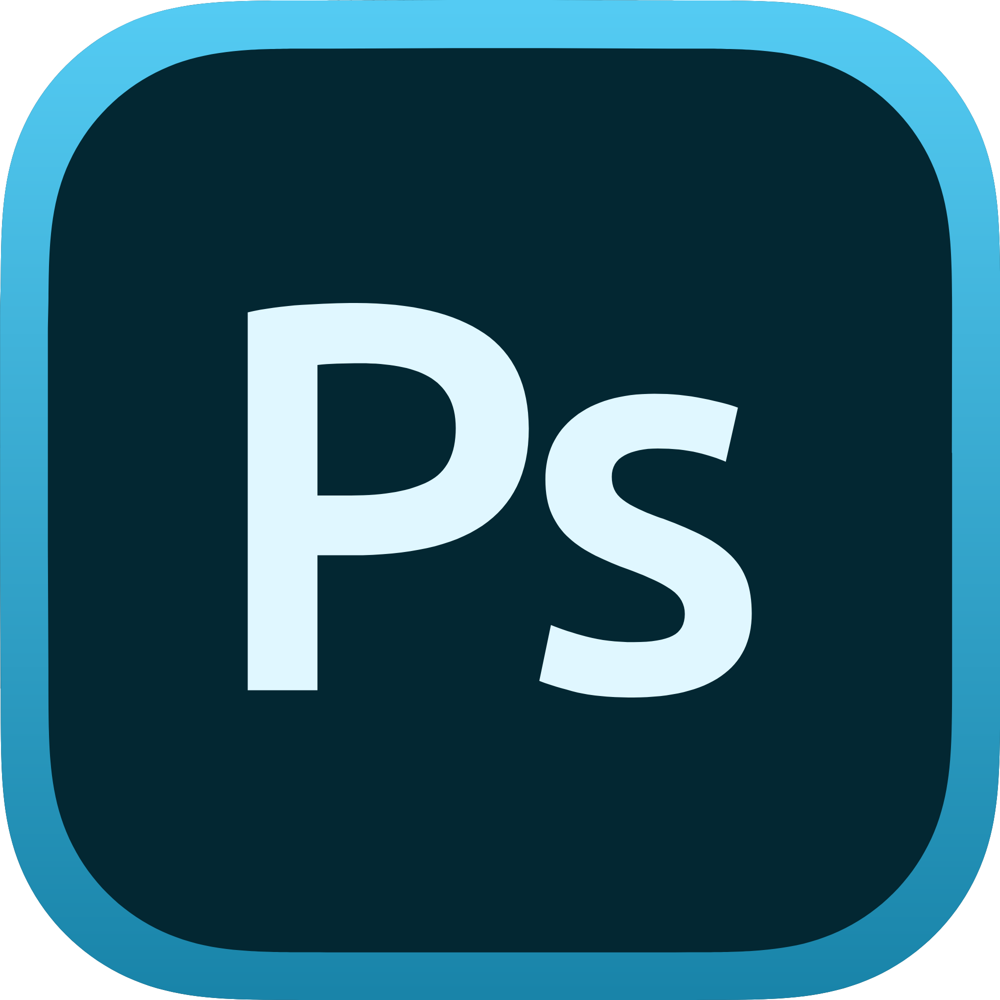
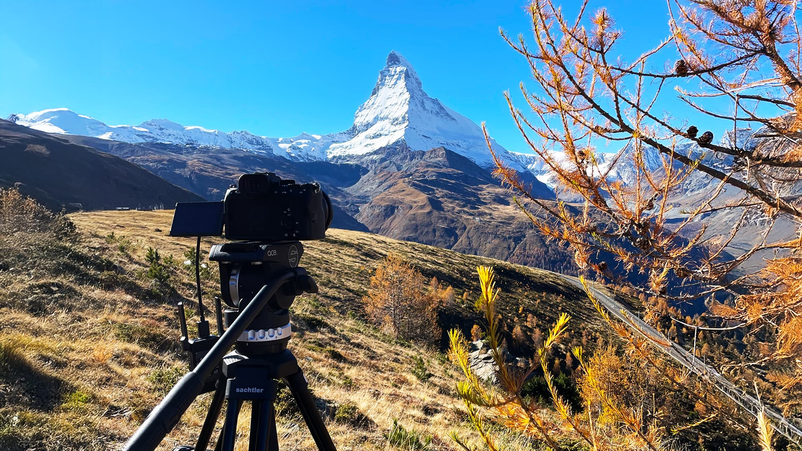
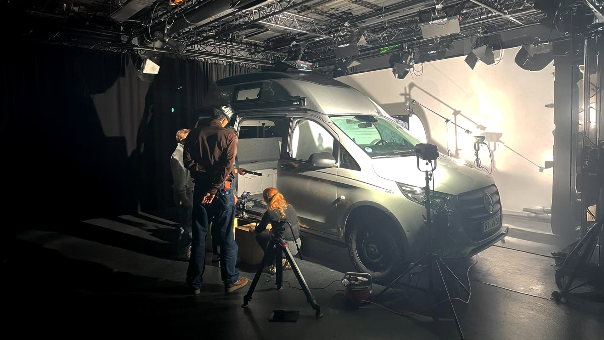
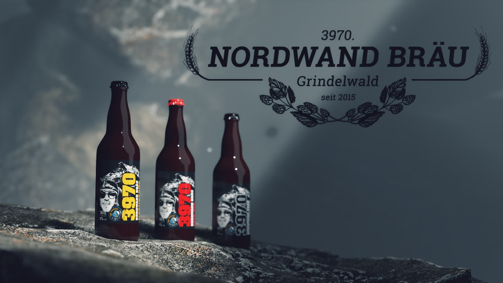

About me
Willkommen in meiner kreativen Welt.
Ich bin 3D Artist und Digital Content Creator aus der Schweiz. Meine Arbeit bewegt sich an der Schnittstelle von Film, Fotografie, Animation und VFX – überall dort, wo Ideen visuell zum Leben erwachen.
Kreativität ist für mich kein Selbstzweck, sondern ein Prozess: ausprobieren, verwerfen, verfeinern. Auf dieser Seite zeige ich, wofür ich brenne und womit ich mich tagtäglich beschäftige.
Tools

Skills
Die Adobe Creative Cloud ist mein täglicher Werkzeuggürtel. Seit über sechs Jahren arbeite ich intensiv mit diesen Programmen und setze sie in unterschiedlichsten Projekten ein. Durch mein Studium in Multimedia Production habe ich gelernt, diese Tools nicht nur kreativ, sondern auch strukturiert und professionell einzusetzen.



3D
Modeling
Eine meiner grössten Leidenschaften ist die 3D-Animation. Ich arbeite hauptsächlich mit der Open-Source-Software Blender und habe mir über die Jahre ein solides, vielseitiges Skillset im Bereich Modeling, Texturing, Animation und Rendering aufgebaut. Mich reizt besonders die Kombination aus technischer Präzision und erzählerischer Freiheit, die 3D bietet.
Film
& VFX
Auch die Arbeit mit einer realen Kamera gehört für mich untrennbar dazu. Während meines Studiums konnte ich an mehreren Drehs mitwirken und eigene Produktionen umsetzen – von der Konzeption über den Dreh bis zur Postproduktion. Gerade in der Postproduktion laufen für mich alle Fäden zusammen: Schnitt, VFX, CGI und Compositing verbinden sich zu einem Gesamtbild. Es ist der Moment, in dem eine Idee, die Monate zuvor auf einem leeren Blatt begonnen hat, ihre endgültige Form annimmt.


Branded
Content
Im Bereich Branded Content verbinde ich visuelles Storytelling mit klaren Markenbotschaften. Ziel ist es, Inhalte zu schaffen, die nicht wie klassische Werbung wirken, sondern authentisch, hochwertig und relevant sind. Ob Animation, Film oder hybride Formate – ich lege Wert darauf, dass Form und Inhalt zusammenpassen und die Identität einer Marke visuell konsequent und zeitgemäss transportiert wird.

Mein Kontakt